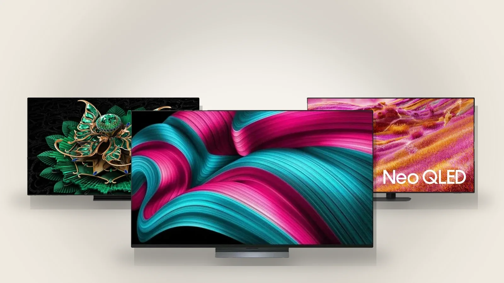

HD, Full HD, 4K, 8K, OLED, QLED, Mini-LED: what the TV labels mean
Two things decide most of a TV's picture: how many pixels it has and what kind of panel lights them.

Resolution
- HD: 1366×768. Found now only on small, 32-inch sets.
- Full HD: 1920×1080. Enough up to about 40–43 inches.
- 4K (Ultra HD): 3840×2160. The standard from 43 inches up; almost every set above 50 inches is 4K.
- 8K: 7680×4320. Four times the pixels of 4K, with very little 8K content to show on it yet.
A rough rule: the bigger the screen and the closer you sit, the more resolution matters. From three metres the difference between Full HD and 4K is hard to see on a 43-inch set and obvious on a 65-inch one.
Panel type
- LED (LCD): a liquid-crystal panel lit from behind by LEDs. The most common and the most affordable.
- QLED, NanoCell, QNED: still LCD, with a quantum-dot or similar layer for richer colour.
- Mini-LED: LCD with thousands of tiny backlight zones, so dark parts of the picture stay dark and bright parts can be very bright.
- OLED: every pixel makes its own light and switches off completely for black. The best contrast and viewing angles, and usually the highest price per inch.
On Better.am
Every TV card shows its size, resolution class and panel type, and the filters narrow the list by screen size and resolution.
24.09.2026